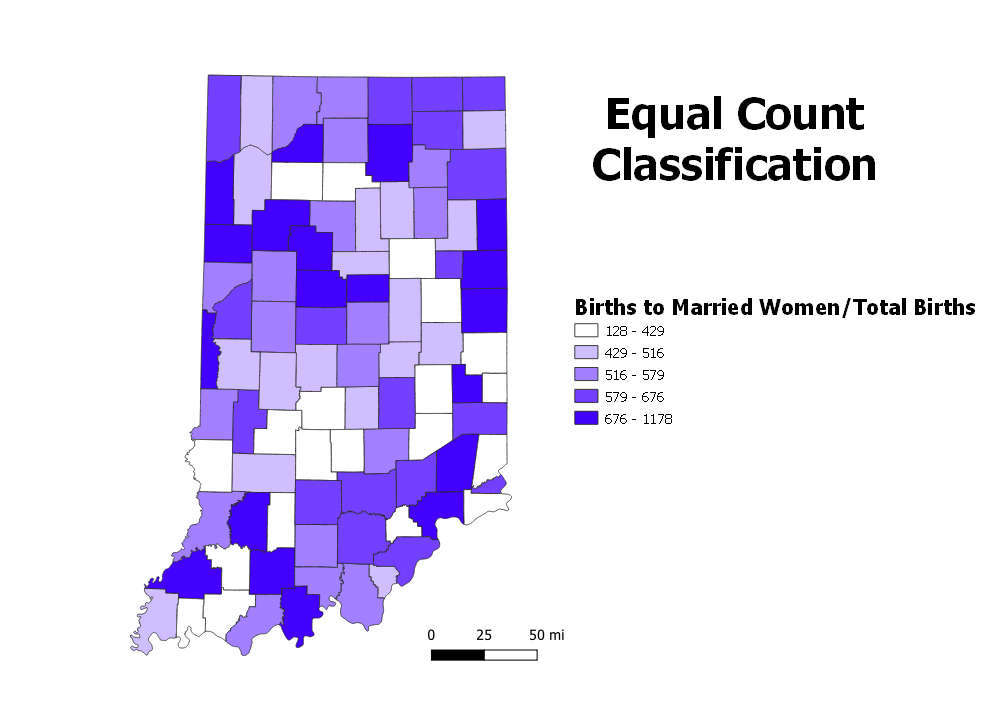
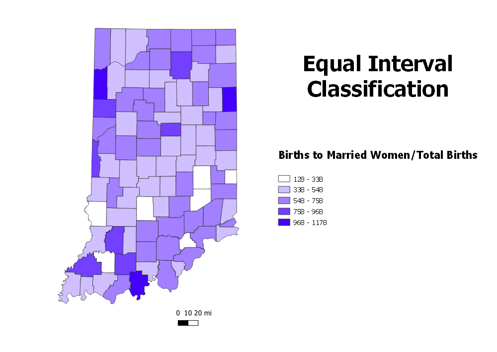
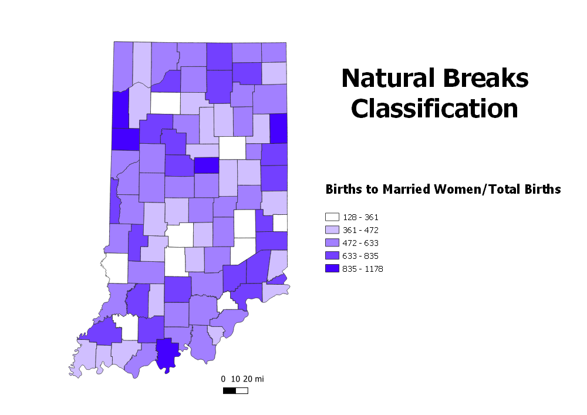

Homework 6 Part 2: Census data ratios and categories
This map depicts the mean household income for each household for each county in the state of Indiana. All households including family and individual are included in the mean income for each county.



Data used for this project
Link to cleaned csv dataset on GitHub
Link to geoJSON on GitHub